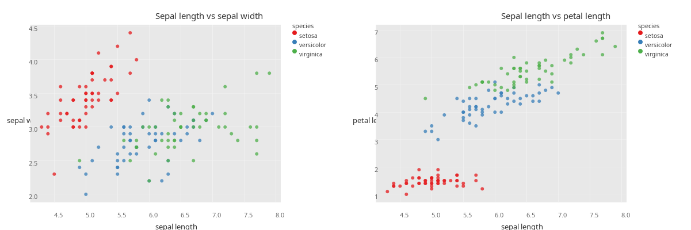

29 Membranes
The fourth stage of Plotje’s pipeline turns a fully-resolved plan into a PlotjeMembrane: a tree of layout-and-drawing primitives sized exactly for the output canvas, ready to be rendered to SVG, PNG, or any other format the Membrane library supports.
A PlotjeMembrane is itself a Membrane UI component. It implements the standard Membrane protocols (IOrigin, IBounds, IChildren), so any tool that consumes Membrane components consumes a Plotje plot without special-casing, and any Plotje plot can be composed into a larger Membrane interface alongside hand-built Membrane elements. This chapter walks the membrane stage end to end and shows that interop in action.
(ns plotje-book.membranes
(:require
;; Kindly notebook annotations
[scicloj.kindly.v4.kind :as kind]
;; Plotje, the public API
[scicloj.plotje.api :as pj]
;; Plotje's membrane impl namespace -- defines the schema and
;; the record class
[scicloj.plotje.impl.membrane :as plotje-mem]
;; Rdatasets for example data
[scicloj.metamorph.ml.rdatasets :as rdatasets]
;; Membrane core: protocols and primitives
[membrane.ui :as ui]))A running example
Throughout the chapter we lift one iris scatter into the membrane stage. The pose looks like:
(def iris-pose
(-> (rdatasets/datasets-iris)
(pj/lay-point :sepal-length :sepal-width
{:color :species})
(pj/options {:title "Iris"})))iris-poseProducing a membrane
The composition shortcut pj/membrane runs the full pipeline up through the membrane stage in one call:
(def iris-membrane (pj/membrane iris-pose))(pj/membrane? iris-membrane)trueThe atomic step pj/plan->membrane does the same starting from an already-resolved plan – handy when you have a plan in hand from inspection and want to skip re-running the earlier stages:
(def iris-plan (pj/plan iris-pose))(pj/membrane? (pj/plan->membrane iris-plan))trueBoth routes return the same shape: a PlotjeMembrane record.
Anatomy
The record carries three structural fields plus optional :plotje/-namespaced attributes:
(kind/pprint
{:width (ui/width iris-membrane)
:height (ui/height iris-membrane)
:origin (ui/origin iris-membrane)
:title (:plotje/title iris-membrane)
:n-drawables (count (ui/children iris-membrane))}){:width 600, :height 400, :origin [0 0], :title "Iris", :n-drawables 9}The width and height come from the plan – the membrane stage does not recompute them; it just inherits the canvas size the plan resolved. The origin is [0 0] because a PlotjeMembrane is the full canvas; when it is embedded in a larger Membrane layout, the layout’s translation places it. The nine top-level drawables for this iris scatter are the title, the y-axis label, the x-axis label, the panel background, the panel grid plus marks, and the three legend rows.
The map keys, as the record presents them, are just three record fields plus the namespaced title:
(sort (filter keyword? (keys iris-membrane)))(:drawables :height :width :plotje/title)The Membrane protocols
A PlotjeMembrane implements three Membrane UI protocols:
IOrigin– the component’s top-left corner inside its parent. Plotje’s membrane is the canvas itself, so(membrane.ui/origin m)returns[0 0].IBounds– the component’s[width height]. Read directly via(membrane.ui/width m)and(membrane.ui/height m), both of which derive from(membrane.ui/bounds m).IChildren– the sub-elements for traversal. Returns the underlying:drawablesvector.
Why these three and not more? Membrane’s protocols partition into “what every UI element supports” (origin, bounds, children) and “what the element does” (drawing, mouse events, key events, …). Plotje implements the first set so a PlotjeMembrane participates in every Membrane consumer that walks a tree generically. Drawing is delegated to the children: when a Membrane backend draws our record, the default IDraw impl walks (children record) and draws each child individually – the existing Translate, WithColor, Path, Label primitives already know how to draw themselves under each backend.
Title and namespaced attributes
The plot title rides as :plotje/title – not a defrecord field but a namespaced map entry assoc’d onto the record. This keeps the record’s arity stable as we add per-membrane attributes in the future. A pose without a title produces a membrane without that key:
(:plotje/title (pj/membrane (-> (rdatasets/datasets-iris)
(pj/lay-point :sepal-length :sepal-width))))nilFuture per-membrane attributes will use the same :plotje/* namespace (for instance :plotje/subtitle or :plotje/caption). A backend reading the membrane can pick up whichever ones it recognizes and ignore the rest – the :plotje/ prefix makes our keys collision-free with any other library composing into the same map.
Composing with other Membrane components
The headline. Because a PlotjeMembrane is a Membrane UI component, you can drop it into any Membrane layout. Two Plotje plots side by side is one line:
(def two-up
(ui/horizontal-layout
(pj/membrane (-> (rdatasets/datasets-iris)
(pj/lay-point :sepal-length :sepal-width
{:color :species})
(pj/options {:title "Sepal length vs sepal width"})))
(pj/membrane (-> (rdatasets/datasets-iris)
(pj/lay-point :sepal-length :petal-length
{:color :species})
(pj/options {:title "Sepal length vs petal length"})))))The result is itself a Membrane component with bounds derived from its children. Two 600 by 400 plots side by side, with a 1-unit gap that horizontal-layout inserts, give a 1201 by 400 canvas:
(kind/pprint
{:width (ui/width two-up)
:height (ui/height two-up)}){:width 1201, :height 400}The combined component is no longer a PlotjeMembrane (it is whatever horizontal-layout chose to return – here, a vector of the two children), but it speaks the same protocol vocabulary, so any Membrane backend can render it. To produce a raster image we bypass pj/membrane->plot (which validates a PlotjeMembrane specifically) and call Membrane’s Java2D backend directly:
(def two-up-png
((requiring-resolve 'membrane.java2d/draw-to-image)
two-up
[(ui/width two-up) (ui/height two-up)]))(instance? java.awt.image.BufferedImage two-up-png)trueThe same pose stages, rendered as raster:
two-up-png
This is why the membrane stage matters as a separate boundary. Plotje produces values that any Membrane consumer understands; Plotje plots compose with hand-built Membrane elements; nothing about the value type is Plotje-specific beyond the namespaced title key.
Rendering through Plotje’s backends
For the common case – rendering a single Plotje plot to one of the built-in formats – the pj/membrane->plot step dispatches on a format keyword and produces the figure. :svg is always available; :bufimg is registered when the scicloj.plotje.render.bufimg namespace is loaded:
(first (pj/membrane->plot iris-membrane :svg {})):svg(class (pj/membrane->plot iris-membrane :bufimg {}))java.awt.image.BufferedImageThe membrane stage is format-agnostic: the same iris-membrane produced one valid value, and that value renders to multiple output formats without re-walking the plan. Adding a new format means writing a defmethod on scicloj.plotje.impl.render/membrane->plot. The Extensibility chapter walks a worked example.
Schema
Plotje publishes a Malli schema for the PlotjeMembrane shape. Backend authors validating an incoming membrane (or constructing their own for testing) can use it:
(plotje-mem/valid? iris-membrane)trueA non-membrane value fails validation:
(some? (plotje-mem/explain {:not :a-membrane}))trueSee also
Architecture – the full five-stage pipeline and where the membrane stage fits.
Extensibility – adding a new format by registering a
membrane->plotdefmethod, plus the other extension points (marks, stats, scales, coordinates).